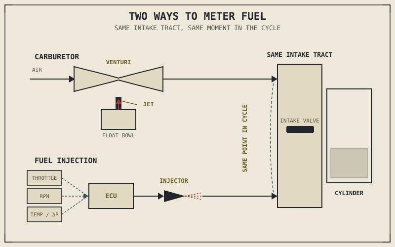

A carburetor contains no electronics, no sensors, and no computer of any kind, and yet it can meter fuel closely enough to run an engine cleanly across most of its operating range using nothing but the physical behaviour of moving air. That's a genuinely elegant piece of engineering, and it's also, in an important sense, obsolete — not because it stopped working, but because "most of its operating range" turned out not to be good enough once the standard for good enough changed.
Chapter 2.3 established that the throttle controls air, and that the fuel system's entire job is to match fuel to whatever air just arrived. This chapter finally explains how that matching actually happens, through the two dominant approaches motorcycles have used: the carburetor and electronic fuel injection.
The Carburetor: Metering Fuel Through Physics Alone
A carburetor sits in the intake tract and uses a deceptively simple physical principle to meter fuel: air flowing through a narrowed passage, called a venturi, speeds up and its pressure drops as it passes through the narrowing. A carburetor positions a small fuel outlet, called a jet, right at this low-pressure point, connected to a reservoir of fuel — the float bowl — held at a constant level by a float and needle valve, much like the fill valve in a toilet tank. As air rushes past the jet, the pressure drop pulls fuel up and into the airstream, and critically, more airflow means a bigger pressure drop, which pulls in more fuel automatically, without any sensor, computer, or moving signal telling it to.
Different jets and mechanical pieces handle different parts of the throttle range: a pilot or idle jet governs fuel delivery at a closed or nearly closed throttle, a tapered needle moving through a needle jet governs the broad middle of the throttle range, and a main jet governs fuel delivery near full throttle. Tuning a carburetor well means selecting the right combination of these components for a given engine, altitude, and climate — and that's exactly where the carburetor's fundamental limitation shows up. Its calibration is fixed in metal, chosen once by whoever set the jetting. It cannot sense that the bike has climbed to altitude, where thinner air needs proportionally less fuel, or that the engine has warmed up, or that conditions have shifted since the day it was tuned. It simply keeps doing the same mechanical thing, correctly for the conditions it was set up for and only approximately correct everywhere else.
Fuel Injection: Metering Fuel Through Calculation
Electronic fuel injection replaces the venturi's passive physics with active calculation. A set of sensors — typically including throttle position, engine RPM from a crank position sensor, and often intake air temperature and pressure — feed continuous readings into an engine control unit, or ECU. The ECU uses these readings, cross-referenced against a stored fuel map, to calculate exactly how much fuel the current moment requires, and commands a fuel injector to spray that precise quantity, under pressure, directly into the intake tract, timed to coincide with the intake stroke Chapter 2.2 described.
Because this calculation happens continuously and can incorporate live sensor data, fuel injection can adapt to conditions a carburetor simply cannot track: altitude, temperature, engine load, even real-time feedback from an oxygen sensor in the exhaust that measures how completely the previous combustion event actually burned, closing the loop and letting the ECU fine-tune the very next injection event based on the last one's result. This is a fundamentally different kind of precision than a well-jetted carburetor offers — not more powerful in principle, but far more consistently correct across a much wider range of real-world conditions.
A carburetor gets the air-fuel matching right for one set of conditions, chosen in advance. Fuel injection gets it right continuously, for whatever conditions actually exist at this exact moment — and that difference in consistency, not raw output, is the real gap between them.

A carburetor's venturi and jet shown alongside a fuel-injected system's sensors, ECU, and injector, both delivering fuel into the same intake tract at the same point in the cycle.
A Common Misconception, Cleared Up Early
It's a common assumption that fuel injection simply makes more power than a carburetor, full stop. At a single, fixed set of conditions — a specific altitude, a specific temperature, a specific engine in specific tune — a carefully jetted carburetor and a well-calibrated fuel injection system can deliver essentially identical air-fuel ratios and therefore essentially identical power, because the underlying combustion chemistry from Chapter 2.4 doesn't care how the fuel arrived, only that it arrived in the right quantity at the right time. Fuel injection's real advantage isn't a power ceiling a carburetor can't reach — it's maintaining that same correct ratio automatically as conditions change, something the carburetor's fixed jetting cannot do without physically being re-tuned.
It's also worth naming honestly why fuel injection became nearly universal on new motorcycles: not primarily a performance chase, but the precision needed to meet increasingly strict emissions regulations, which demand exactly the kind of consistent, closed-loop air-fuel control a carburetor structurally cannot provide. Fuel injection's dominance today is as much a regulatory story as an engineering one.
Where This Leads
This chapter completes the picture of how the air-fuel mixture Chapter 2.3 introduced actually gets assembled before it reaches the cylinder. What happens after combustion — how the spent gases described in Chapter 2.2's exhaust stroke actually leave the engine, and why the pipe carrying them away is engineered as carefully as anything covered so far — is Chapter 2.14's subject.
Key Concepts to Remember
- A carburetor meters fuel purely through physics: airflow through a venturi drops pressure at a jet, pulling in fuel proportional to airflow, with no sensors or computation involved.
- Different carburetor jets and needles govern different parts of the throttle range, but the whole assembly's calibration is fixed and cannot adapt to changing altitude, temperature, or load.
- Fuel injection uses sensors feeding an ECU to calculate and deliver precise fuel quantities continuously, and can incorporate real-time feedback like an oxygen sensor to correct itself as conditions change.
- At a fixed set of conditions, a well-tuned carburetor and a well-calibrated fuel injection system can produce essentially identical power — the real difference is fuel injection's consistency across changing conditions, not a higher output ceiling.
- Fuel injection's near-universal adoption is driven as much by emissions regulation, which demands precise closed-loop control, as by any performance advantage.
Cross-References
| ← Ch. 2.3 | Established that the throttle controls air and the fuel system's job is to match it; this chapter explains the two dominant mechanisms for making that match. |
| ← Ch. 2.4 | Established the combustion chemistry that both delivery methods are ultimately trying to serve equally well. |
| ← Ch. 2.2 | Described the intake stroke fuel injection times its delivery around. |
| → Ch. 2.14 | The exhaust system — how combustion's spent gases actually leave the engine after the fuel delivered here has done its job. |